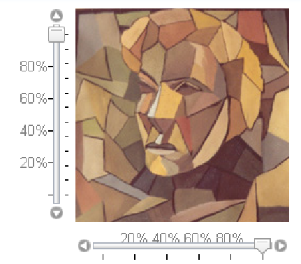

2.2.9 The Slider component
The Slider component permits to modify the position of a cursor. At this position, is
associated a value. The value is bounded by a maximum and a minimum value. The
slider has two positions: vertical and horizontal.

2.2.9.1 Create a Slider.
To import the Slider class:
import com.objetdirect.tatami.client.Slider;
To create a Slider, we need 5 parameters:
position: Slider.HORIZONTAL or Slider.VERTICAL determines the position for
the slider.
-
minimum:
- Sets the minimum value available on the slider
-
maximum:
- Sets the maximum value available on the slider
-
initialValue:
- determines the initial cursor’s position.
-
showButtons:
- Boolean permitting to show or hide the button to increment or
decrement the position of the cursor.
Example of using the Slider constructor :
// 0 is the min value. // 100 is the max value. // 50 is the initial value. //no buttons are shown Slider slider =
new Slider(Slider.HORIZONTAL, 0,100,50,
false);
2.2.9.2 The API of the Slider component.
Principal methods from the Slider component :
-
void setValue(int):
- Modifies the selected value on the cursor
-
int getValue():
- Returns the current selected value.
-
int getMaximunValue():
- Returns the maximum allowed value.
-
int
- getMinimumValue(): Returns the minimum allowed value.
-
void
- setEnabled(boolean): enables or disables the slider
-
Boolean
- isEnabled() : returns whether the slider is enabled or not
The following methods are used to add or remove rule marks at different positions on the
slider. The first parameter sets the number of ticks, and the second one their size in
any standard css unit (“px”,”em” etc...).
-
void setRuleMarkBottom(int,String)
-
-
void setRuleMarkTop(int,String)
-
-
void setRuleMarkLeft(int,String)
-
-
void setRuleMarkRight(int,String)
-
-
void removeRuleMarkBottom()
-
-
void removeRuleMarkTop()
-
-
void removeRuleMarkLeft()
-
-
void removeRuleMarkRight()
-
The following methods are used to add or remove labels on each rule mark set. The first
argument is an array containing the labels, the second one is the css style applied to
this label.
-
void setRuleLabelsTop(String[],String)
-
-
void setRuleLabelsBottom(String[],String)
-
-
void setRuleLabelsLeft(String[],String)
-
-
void setRuleLabelsRight(String[],String)
-
-
void removeLabelsTop()
-
-
void removeLabelsBottom()
-
-
void removeLabelsLeft()
-
-
void removeLabelsRight()
-
The following methods return the labels on a specific position. If there are no labels,
they return null.
-
String[] getLabelsLeft()
-
-
String[] getLabelsRight()
-
-
String[] getLabelsBottom()
-
-
String[] getLabelsTop()
-
The following methods return the labels style for a specific position:
-
String getLabelsTopStyle()
-
-
String getLabelsBottomStyle()
-
-
String getLabelsRightStyle()
-
-
String getLabelsLeftStyle()
-
The following methods return the number of mark at the specified position:
-
int countRuleMarkTop()
-
-
int countRuleMarkBottom()
-
-
int countRuleMarkLeft()
-
-
int countRuleMarkRight()
-
The following methods return the mark size at the specified position
-
String getSizeRuleMarkTop()
-
-
String getSizeRuleMarkBottom()
-
-
String getSizeRuleMarkLeft()
-
-
String getSizeRuleMarkRight()
-
2.2.9.3 Add some rule mark ands and labels.
Below stands an example of how to add some rule mark and labels on a Slider
component. See also the project TatamiDemo-1.1. You can add a rule mark at the
right, left, top, bottom of the slider, it depends of the position (vertical or horizontal)
of the slider. But if you add a rule mark at the right position while the slider has a
horizontal value, the rule mark will be displayed at the bottom of the slider. To set a
rule mark, you need to know how many marks you want and their size. For the labels
it’s the same thing, but instead of giving a number you give an array of
String corresponding to each label. Moreover you can specify the labels css
style.
Slider verticalSlider =
new Slider(Slider.VERTICAL, 0, 100, 100,
true);
verticalSlider.setRuleMarkLeft(6, "5px");
verticalSlider.setRuleMarkRight(12, "3px");
String[] labels = {"␣","20%","40%","60%","80%", "␣"};
verticalSlider.setLabelsLeft(labels,"margin:␣0px␣
-0.5em␣0px␣
-2em;color:gray");
Slider horizontalSlider =
new Slider
(Slider.HORIZONTAL, 0, 100, 100,
true);
horizontalSlider.setRuleMarkBottom(6, "5px"); horizontalSlider.setLabelsTop(labels,"margin:␣
-0.5em␣0px␣
-3.5em␣0px;color:gray");